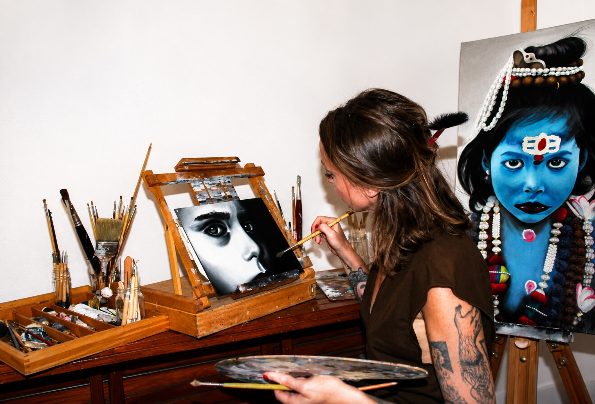

Gli Arcani Maggiori

I. UNITAS
L'Uno Primordiale

II. MATER
La Madre Cosmica

III. CREATIO
Il Principio Creativo
Un viaggio pittorico ed ermetico tra forma e spirito. Attraverso 22 opere dipinte a mano, la riscoperta delle leggi universali e della geometria sacra dell'anima.
Esplora le Opere
Francesca Cortona è un'artista e ricercatrice spirituale il cui percorso visivo si intreccia indissolubilmente con la ricerca simbolica ed esoterica. La sua arte nasce dall'esigenza di tradurre in forme e colori le verità sottili e le leggi cosmiche che regolano l'esistenza.
Attraverso un'intensa ricerca sulla luce, il colore e la Geometria Sacra, le sue opere diventano portali di meditazione e strumenti di conoscenza interiore, unendo la precisione del disegno simbolico alla fluidità dell'espressione pittorica.
L'Uno Primordiale
La Madre Cosmica
Il Principio Creativo